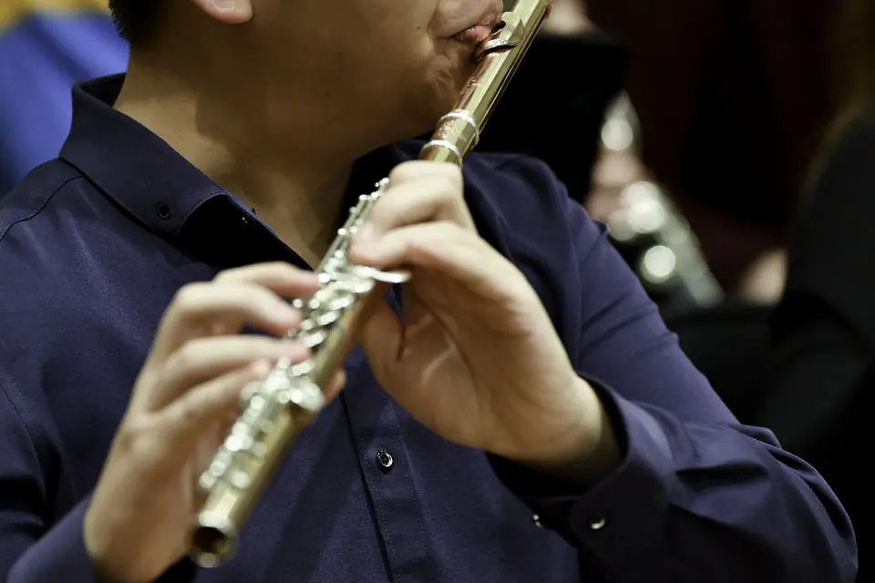
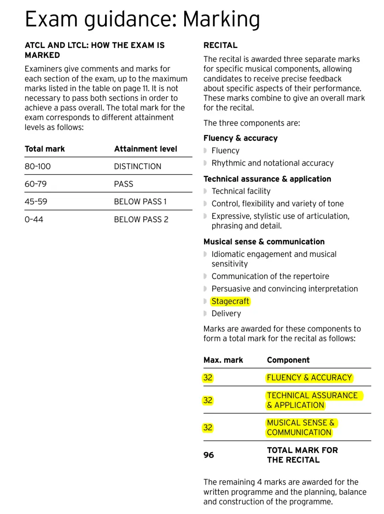

這是舊站 oliverflute.com 的文章，內容保留原貌，只修正排版。其中的考試日期、價錢和課程安排屬寫作當時的資料，請以現行公布為準。

Trinity共有三個演奏級別的樂器考試，依次序是ATCL(Associate of Trinity College London)，LTCL(Licentiate of Trinity College London)及FTCL(Fellowship of Trinity College London)。以FTCL為最高級，代表音樂碩士級程度，LTCL次之，代表音樂樂士Final year程度，ATCL為第三級，代表音樂樂士一年生程度。而ATCL及LTCL級的考試會分為Recital及Performance兩個不同的考試，即是有ATCL Recital, ATCL Performance, LTCL Recital 及LTCL Performance四個組別。三個級別的考試(ATCL,LTCL,FTCL)都有不同的曲目及表演時間要求，ATCL需演奏三十二至三十八分鐘樂曲，LTCL需要三十七至四十三分鐘，而FTCL則要四十二至四十八分鐘。演奏時間並不包括SETUP，調音，樂章之間的停頓等時間。

整個考試須包含至少兩個完整作品，並要表現出不同的音樂風格及速度。表演曲目可以完全在指定曲目中選取，或者加插一些自選的曲目，甚至完全以自選曲目考試，但自選曲目必須是同等級別並經考試當局預先審核批准。

Recital考試分為兩部分，2019 年起分數比重有所調整，當中96%分數為表演部分，另外4%分數則是Programme Notes。而Performance考試則包括表演曲目，Technical Works，Sight Reading，Ear Tests及Programme Notes。
由於Recital考試比較簡單，只有兩個考試項目及不需要考Sight Reading，Scales，Ear Tests等，故此大多數考演奏級的人都是考ATCL Recital的。
Source: TrinityCollegeLondon
www.trinitycollege.co.uk